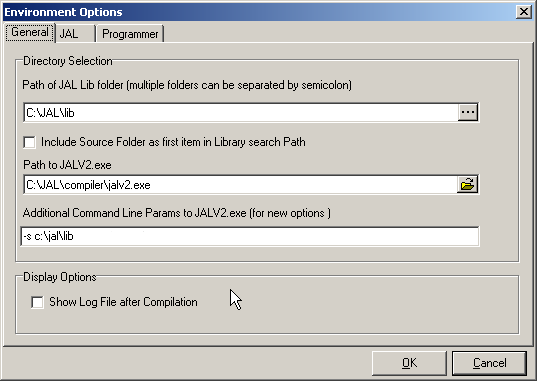
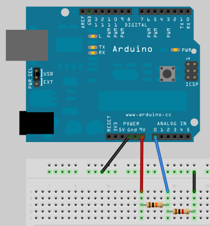
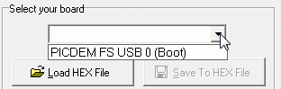
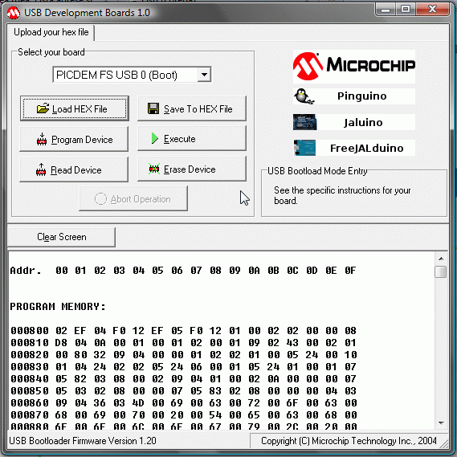
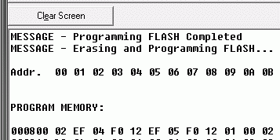
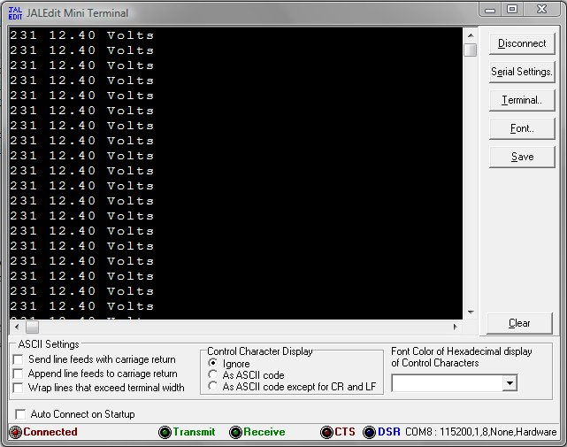
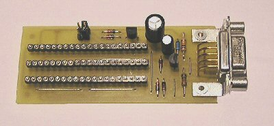

Software and drivers
1. Forewords
We will install the development chain needed to start programming our board and we will learn few tricks about bootloader.
2. Copy the software from CD-ROM
Just copy the entire "\jal" directory from the CD-ROM to "C:\" so path to JAL will be "C:\jal". It needs to be there because all documentation will refer to that location (hope you are OK with this). The main structure of the folder is:
- C:\jal - the main jal folder which contain also jal license
- compiler - Jalv2 compiler maintained by Kyle (author)
- doc - compiler and language reference (including JAL API)
- jaledit - the JAL IDE.
- lib - jallib libraries and device files
- Pdfsusb - Microchip application to upload .hex apps. on your board
- project - some projects as FreeJALduino and Serial LCD
- sample - the official samples for our micrcontroller(s)
- USBDrivers - for bootloader and USB CDC.
This is a reduced version of the official package. I removed everything not related to our microcontrollers (18F2550/18F4550).
3. Configuring Jaledit
Start JALEdit.exe from
C:\jal\jaledit
folder and, from the main menu "Compile" choose "Environment Options" option. The dialog box must look like in this image:

Hope is clear and fields can be set as seen in this image. This is all you need to do, the IDE is ready to compile your files. The required options regarding to bootloader are included in freejalduino4.jal file as pragmas.
4. Modifying and burning the bootloader
This step require an already installed and working ICSP programmer. Still, an working solution will be presented as alternative to Pickit2 programmer at the end of this page. If you are ok with your current bootloader, then you can skip this (but is useful to continue reading).
Why touching the bootloader sources? First, the current bootloader is configured by default to wait 10 seconds before giving the control of an existing user application. Secondly, it have a pin configured as digital output to light a LED, signaling "Boot mode" or "Application run" situations. These two features can be changed or disabled. The waiting time cand be increased or lowered and LED signaling can be disabled, freeing a pin for either input or output operations, as you wish. The third reason of why you must look into source is the fact that here are defined microcontroller fuses and, if you decided that you don't need the bootloader (having a Pickit2), you can copy the fuses definitions and put them in the header of almost every program you can make for this board. This way you will get accustomed with the fuses without problems.
We will look at 18f2550_usb_bootloader_autostart.jal file which can be found in:
C:\jal\project\FreeJALduino\FreeJALduino5\bootloader
4.a. The waiting time
The waiting time between RESET and giving the control to user application.
The code starts at line 734. The comment inside explain everything - change the value as you wish.
-- 22 counts per second, ~10 seconds wait => 220 ticks -- if expired, then jump to user location if t1_count > 220 then
So, for 5 seconds wait, the value is 110.
4.b. Disabling the LED indicator
The code starts at line 711.
-- ==================================== -- Start define LED boot mode indicator -- -comment it if you don't want it :) alias led is pin_A4 alias led_direction is pin_A4_direction led_direction = OUTPUT led = HIGH -- end LED boot mode indicator -- ====================================
The code starts at line 737.
-- ================================================================ led = LOW -- LED boot mode indicator OFF (comment to disable) -- ================================================================
So, comment the lines 711, 712, 713, 714 and 737 and you just issued the RA4 pin (D2 pin on our board).
4.c. Bootloader fuses
The code starts at line 57.
-- fuses pragma target PLLDIV P5 -- divide by 5 - 20MHZ_INPUT pragma target CPUDIV P2 -- OSC1_OSC2_SRC_1_96MHZ_PLL_SRC_2 pragma target USBPLL F48MHZ -- CLOCK_SRC_FROM_96MHZ_PLL_2 pragma target OSC HS_PLL pragma target FCMEN DISABLED pragma target IESO DISABLED pragma target PWRTE DISABLED -- power up timer pragma target VREGEN ENABLED -- USB voltage regulator pragma target VOLTAGE V20 -- brown out voltage pragma target BROWNOUT DISABLED -- no brownout detection pragma target WDTPS P32K -- watch dog saler setting pragma target WDT DISABLED -- no watchdog pragma target CCP2MUX pin_C1 -- CCP2 pin pragma target PBADEN DIGITAL -- digital input port<0..4> pragma target LPT1OSC LOW_POWER -- low power timer 1 pragma target MCLR EXTERNAL -- master reset on RE3 pragma target STVR DISABLED -- reset on stack over/under flow pragma target LVP DISABLED -- no low-voltage programming pragma target XINST ENABLED -- extended instruction set pragma target DEBUG DISABLED -- background debugging pragma target CP0 DISABLED -- code block 0 not protected pragma target CP1 DISABLED -- code block 1 not protected pragma target CP2 DISABLED -- code block 2 not protected pragma target CP3 DISABLED -- code block 3 not protected pragma target CPB DISABLED -- bootblock code not write protected pragma target CPD DISABLED -- eeprom code not write protected pragma target WRT0 DISABLED -- table writeblock 0 not protected pragma target WRT1 DISABLED -- table write block 1 not protected pragma target WRT2 DISABLED -- table write block 2 not protected pragma target WRT3 DISABLED -- table write block 3 not protected pragma target WRTB DISABLED -- bootblock not write protected pragma target WRTD DISABLED -- eeprom not write protected pragma target WRTC DISABLED -- config not write protected pragma target EBTR0 DISABLED -- table read block 0 not protected pragma target EBTR1 DISABLED -- table read block 1 not protected pragma target EBTR2 DISABLED -- table read block 2 not protected pragma target EBTR3 DISABLED -- table read block 3 not protected pragma target EBTRB DISABLED -- boot block not protected
These are the fuses definitions you must use in your applications if you don't use a bootloader but a programmer. You will learn in this page the general structure of a JAL application (program).
Ok, this is all. After you did the modifications, you can compile the file and write the hex with the ICSP programmer (or remove the PIC and use a socketed programmer - see at the end of the page).
5. Installing the drivers for bootloader
Connect the board to the USB (green jumper can be in "USB power source" position if you don't use an external power adapter - both LED's are ON if blue jumper is set to left ) and Windows will detect it and after a while, will ask you for the drivers. You must point to this folder:
"C:\jal\USBDrivers\MCHPUSB Custom Driver\MCHPUSB Driver\Release"
After installation, Pdfsusb.exe uploader should be able to detect your board.
6. Compiling and uploading a test application to force USB-CDC drivers install
We need a little project which use Serial USB (CDC) to force driver installation (other than the one required for bootloader). This project will use a resistive divider on RA0/AN0 (A0 on our board notation) pin where R1 = 10Kohms and R2 = 1Kohm allowing a maximum of 55Vcc as input (don't use the maximum). The application will calculate the voltage (we measure the voltage from adapter source or battery) using 32bit integer math and will send the value via USB to a terminal, along vith ADC value for verification purposes - I think is a little sooner to explain the program in detail; we use it only for driver installation. For this project we will need a Wall Power Adapter or a 9Vcc battery or 12Vcc battery form a RE project.
6.a. Setting the board
We must set the board (I'm using Fritzing for generating such schematics).

- - set the green jumper to right (Power Adapter)
- - set the blue jumper to left ("Boot mode" indicator - if you did not disabled it)
- - connect wires as seen in schematics
- - connect the power adapter (both LED's are ON)
- - connect usb cable
6.b. Compiling the program and generating the hex file
Start Jaledit.exe and open the USB_ADC.jal file from
C:\jal\project\FreeJALduino\FreeJALduino5\examples
folder. Or see it bellow:
include freejalduino4 -- FreeJALduino4 pinout layer for the last board model
-- include libraries
include usb_serial
include print
include format
include delay
var dword Value
var word AD_RESULT
var word Volts
const byte str1[] = " Volts\r\n"
-- ==================================================
-- PROGRAM START ------------------------------------
-- ==================================================
-- configure pins
enable_digital_io() -- first, all pins set to digital
-- now configure ADC constants
const bit ADC_HIGH_RESOLUTION = true -- 10bit resolution
const byte ADC_NVREF = 0 -- no voltage reference
const byte ADC_NCHANNEL = 1 -- how many ADC channels we are using,
-- always starting the count from A0 (RA0/AN0) pin
-- This will automatically set A0 as analog input
const word ADC_RSOURCE = 909 -- impendance (R1*R2/(R1+R2)) in ohms
-- then, load the ADC library
include adc
-- Initialize ADC
adc_init()
-- initialize the USB serial library
usb_serial_init()
-- start main loop
forever loop
usb_serial_flush()
AD_RESULT = adc_read(0)
print_word_dec(usb_serial_data, AD_RESULT)
usb_serial_data = " "
--Value = 537 * AD_RESULT
Value = dword(537) * AD_RESULT -- one of the operands must be casted
-- as dword to trigger a 32bit integer math calculation
Volts = Value / 100
format_word_dec(usb_serial_data, Volts, 4, 2)
print_string(usb_serial_data, str1)
end loop
--
Select "Compile" option from the "Compile" main menu, or just press F9 key. Look at compilation messages and if everything is ok, you obtained the hex file in the same folder with source file.
6.c. Uploading the program on board
Next, open Pdfsusb.exe Microchip application from
C:\jal\Pdfsusb
folder. Because our user space is empty, the bootloader will not try to give control to user application, will stay in "Boot mode" indefinitely so, we don't need to rush. Select the combo box and you should see "PICDEM FS USB 0 (boot)". Select it and board is ready to receive your program. In common conditions, when you have a previous user application, from the RESET bootloader has started counting and if you don't select the board from the combo box within 10 seconds, bootloader will give control to your previous application. But when the selection is made, bootloader stops counting and awaits your program.

Press "Load HEX file" button and choose USB_ADC.hex. You can see that the program starts from 0x800 address (000800).

Press "Program Device" button and application will start to upload the hex file into your board. If everything is ok, you should get this message:

Close Pdfsusb.exe application.
6.d. Running the application
Now, you can RESET the board. After 10 seconds, the red LED will go OFF and after few seconds, Windows will discover that a virtual COM port have been connected to USB port. Windows will ask you about the driver and you must point to this folder:
C:\jal\USBDrivers\USB-CDC\inf\win2k_xp_vista32_64\
Start JALEdit.exe (if not started already) and select "Comm. Terminal..." from the "Tools" menu. A mini terminal will appear. Configure it for 115200 bps, select the COM terminal assigned by Windows to your board and you will see something like this:

My battery voltage at night (solar system). First colum is ADC digital value and second column is voltage value.
This is all! Now you have an working development chain.
7. A viable (and at hand) alternative to Pickit2 programmer
At least, you can make your own copy of Pickit2 programmer because you can program 18F2550, 18F4550 pics with this programmer. Or you can use it regularly if you use a 40pin ZIF socket (you need to resize the board accordingly). Jean-Pierre Mandon use this programmer for all his Pinguino boards. The programmer can be found on his page here.

8. What next?
You can start digging in JAL documentation but you can try this first.